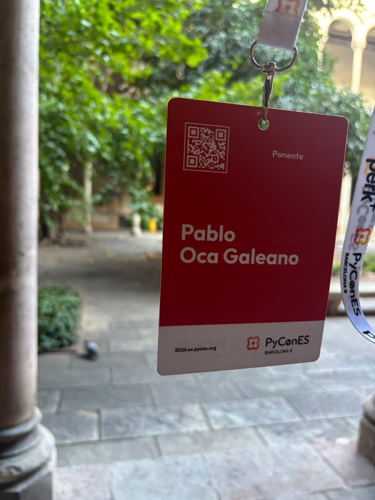

Featured talk Speaker · PyConES 2026
Más allá del Global Interpreter Lock: Exprimiendo algoritmos genómicos con Numba, Cython y CUDA
Beyond the Global Interpreter Lock: squeezing genomic algorithms with Numba, Cython and CUDA.
How to escape Python’s GIL to accelerate real bioinformatics workloads — biclustering on gene-expression matrices — moving from pure Python to JIT compilation, native extensions and GPU kernels, with reproducible benchmarks.
- Stack
- Numba · Cython · CUDA
- Domain
- Genomics · Biclustering